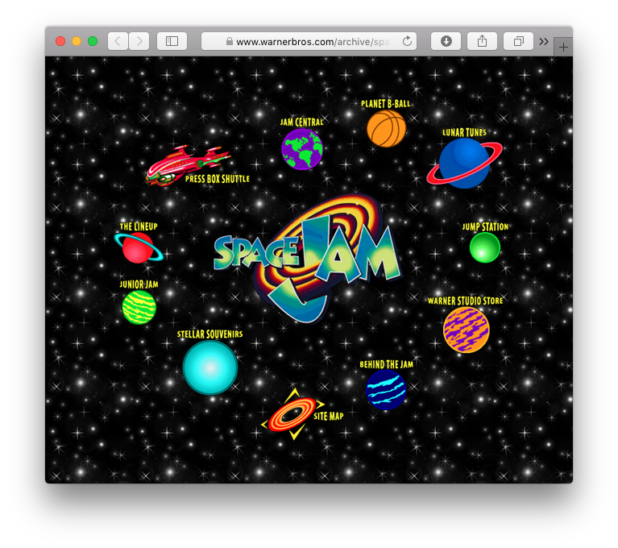

Space
Cram
Eric Portis ★ YGLF ★ 2017-10-30
Thanks [intro person]
My name is Eric Portis and I work for Cloudinary. And today, I'm going to talk to you about—
Space Jam!
—Space Jam!
If you aren't familiar, Space Jam a 1996 animated sports comedy featuring Bugs Bunny and Michael Jordan
Nerdlucks
In it, Bugs and his friends are kidnapped by a bunch of small, weak, very-heavily-armed aliens, called the NERDLUCKS
Bugs *tricks* the nerdlucks into offering the Looney Tunes one last chance to win their freedom, in a game of basketball.
This seems like a great idea! Until the Nerdlucks use their advanced technology to *steal the talents* of some of the NBA's best players –
Monstars
– tranforming themselves into the fearsome MONSTARS. And while this sort of transformation – you know – a bunch of nerds using their tech skills to become so powerful that it's kind of scary, actually – might be familiar to us – 
Bezos transformation
— it takes Bugs and his friends completely by suprise. So they do a little kidnapping of their own, and suck Michael Jordan through golf hole, into an intergalactic struggle for their own freedom...
Tipoff
... and we're off.
Technically, Space Jam was a very impressive movie in 1996, but the thing about it that was, perhaps, the most ahead of its time was it's weird and wonderful website

The Space Jam Website
http://www.warnerbros.com/archive/spacejam/movie/jam.htm
I first discovered the Space Jam website in Jen Simmons’ amazing talks on CSS Grid and the next generation of web layouts.
Jen talks about how the website embodies the early experimental days of the web design. The front page layout is based on CIRCLES rather than squares, and the deeper you go into this living relic, the wilder it gets.
The site takes the idea of multimedia seriously and is full of way more than just text and images -- it has movies and quicktime VRs and sound files – interactive games and screen savers and e-cards that you can send to your friends.
Personally, my favorite section encourages readers to use ResEdit to hack their Netscape Navigator binary and turn the little N logo in the top right corner into a "hupercool spinning basketball."
But I don't want to talk about the page's layouts or multi-hyper-media. I do kind of want to talk about how amazing it is that it looks and works the same in 2017 as it did in 1996 -- and what that says about the web as the world's platform for digital knowledge -- but this is a lightning talk, and there's just no time.
Performance
How fast can this living relic go?
What I am going to focus on instead is the sites’ PERFORMANCE.
What's the first thing we have to do when we want to think about a site's performance? We have to measure it.
If we take the front page of the site and run it through WebPageTest we can see that it has
[click]
a total weight of 281 KB, and
[click]
a speed index of 1102 - this puts it at around the top 5 or 10 percent of all websites, as far as speedy speed index scores --
which makes sense. This page was designed in 1996, to be loaded over dial-up modems, so it HAD to be fast
Our question today is: how can we make it faster?
<script type="text/javascript" src="/sites/all/libraries/omniture/omniture.js"></script>
<script type="text/javascript" src="/archive/js/tracking.js"></script>
Well first, we can pick some very ugly, low-hanging fruit.
It seems that at some point between 1996 and 2017, Warner Brothers added two little tracking scripts to the site.
One is called "omniture.js" and the other is called "tracking.js". And while in the markup, they look so small and so innocent -- functionally, they completely ruin the site’s performance.
Running them, we end up loading Google Analytics things. Adobe Omniture things. Things from DoubleClick and Google Tag Manager. Things from Oracle's BlueKai.
[click]
When the dust settles, these two little scripts bring in almost TWO HUNDRED AND THIRTY KILOBYTES of crap.
[click]
The good news is, deleting these scripts is an easy fix. And when we do---
--right off the bat we see an 80% reduction in total page weight, all the way down to 56kB. And the speed index goes all the way down to an incredible
[click]
688 -- putting this page well within the top 1% of fastest webpages on the internet.
So -- the first and biggest takeaway here – be really mindful of the impact of your analytics, tracking, a/b testing, and personalization scripts -- this cruft may benefit some department in your company but it is actively hostile to the the user.
I get that analytics and ads help us fund, measure, and in the end, make, our content. But for gods sake if you're going to use a tracking platform just use *one* tracking platform, not *all* of them, as Warner Brothers has, here.
Ok. So, returned to it's original, pristine, state – this thing is really fast.
In order to make it even faster we need to know: what's it of?
If I scroll down a bit on the WebPageTest results, to the content breakdown, I can see that approximately all of the bytes
[click]
56 KB out of 56 KB – are image bytes.
So if we’re going to squeeze any blood from this stone, we need to compress the page’s images.
Uh-oh.
Bad news, these images have already been *super* compressed.
I did a little research - the Space Jam web team used the creme de la creme of 1996 image technology to craft this site: DeBabelizer Pro 4.5. Retailing for a cool six hundred dollars, and coming in an *extremely* thick box (that's how you know you're getting your money's worth)– DeBabelizer was a program designed to do one thing: image ENCODING. It couldn't *edit* images at all. But it could transcode and compress them for use on the web.
If Warner Brothers’ web team had been as care-free with image compression as I was when making my first websites in 1996, improving upon their work in 2017 would be easy. Alas, they’ve already compressed the heck out of these things, and our job is quite hard.
It gets worse. You see, the site's original creators have a huge, unfair advantage over us. They were feeding DeBabelizer high-resolution, full-quality, original art. But all *we* in 2017 have to work with, is DeBabelizer’s low-resolution, super-compressed *OUTPUT*.
If we had the original art, we might be able to make different compression decisions that resulted in different sorts of artifacts. But we don’t, so we can't. Whatever new compression artifacts we introduce will exist on top of DeBabelizer’s, making the images look *extra* bad – we’re effectively xeroxing a xerox, rather than the original. We're fighting what's called *generation loss*.
So – we're up against a strong opponent, and suffering from a significant handicap. What should we do?
Well, if we go back to our WebPageTest results
[click]
and click on this link in the upper right called “image analysis”...
...we're whisked away to a different tool – built by Cloudinary – called Website Speed Test.
Website Speed Test diagnoses image compression problems.
It analyzes all of the images on a page – and uses huersitics and trial encodes to choose the best format for each image and dial in just enough compression.
Then, it measures the original page against the re-compressed result, and tells us how we did and what we could do better.
The best thing about it is that it does this all *completely automatically*.
And the second best thing about is that it’s *completely free*.
So! Let's go to the results!
Despite how highly-compressed these images already were, and despite our generation-loss handicap - Website Speed Test thinks that it can cram the Space Jam homepage down to about 60% of it's original size, with minimal loss in image quality.
So – while this 40% reduction is not quite as significant as the 80% reduction we got from cutting out tracking scrips – it's nothing to sneeze at, either.
If we dig into the individual image results, we can see how Website Speed Test is achieving those gains. Mostly, they're coming from converting the orignal gifs into more modern formats. Some of the images are best-encoded as a WebP; others would be better served as PNGs.
<img src="img/p-jamlogo.gif"
height="165" width="272"
alt="Space Jam"
border="0">
So, how do we want to actually use the new 40% smaller WebPs and PNGs that Website Speed Test has generated?
I could download them all from the results page, and mark them up and host them all myself.
That sounds like a lot of work, though, especially for all 432 images across 268 pages on the ENTIRE Space Jam web site. So what I've done instead, is set up an auto-upload migration to Cloudinary, and then used the same automatic compression features that Website Speed Test does, directly. Like this.
[click]
This URL serves up the same optimized resources that Website Speed Test generated. Even better, it sends different resources to different browsers depending on what formats they support. So Chrome might get a WebP, while other browsers get PNGs or GIFs -- or who knows maybe something really crazy like a JPEG-XR. All based on what sort of compression works best for the image’s actual content, and the end users' browser.
By taking the easy route, I get something else, too – these resources are now being served by Cloudinary’s CDN, rather than my host – providing extra, extra, *extra* speed.
Our newer, faster, Cloudinary-powered, version of the entire Space Jam website lives at https://take.spacejam.down.to.performance.town, and I encourage you all to check it out, give it a whirl, tell your friends
TODO whole site stats?
webspeedtest.cloudinary.com
And, you know, if the Website Speed Test can do that much for Space Jam, think about what it could do for you!
You can access the Speed Test either through the WebPageTest “Image Analysis” tab or directly, at this URL webspeedtest.cloudinary.com
Give it a go! See how much image weight you could save on your own projects!